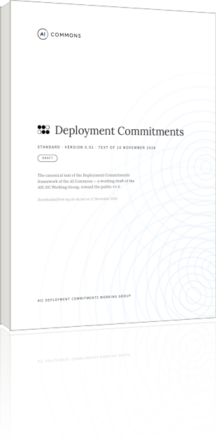
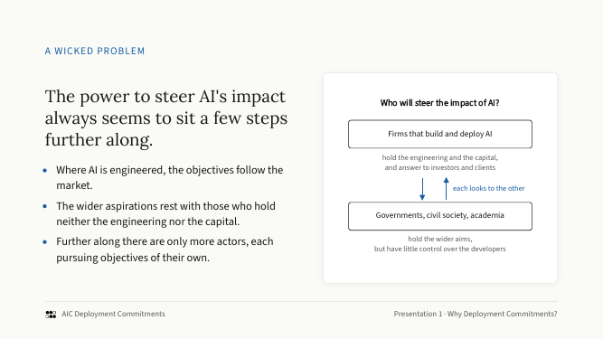
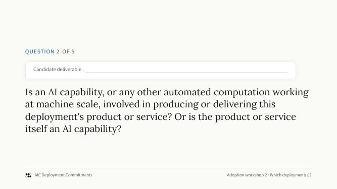
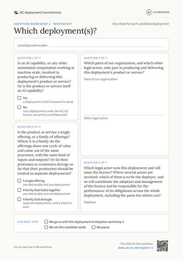
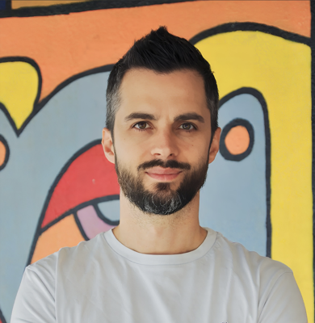
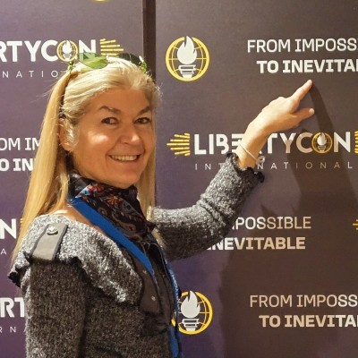

Formulas that turn AI deployments into commons.
When AI, the combined knowledge of all of us, impacts the living world and reaches into people's lives — where do we stand in what it does? When it is put to work in services, products, and businesses around the world, or when it conducts economic activity on its own — what's in it for us?
The commons in action.
Digital commons are layers of shared artifacts: circulating under open terms, co-created by many, reusable by all. But when a shared artifact becomes a generative workforce, or an agent that can act on its own, the commons has to reach beyond the artifact. The spirit of the commons must live in operations and their effects.
Built into the world as it is.
AI is deployed inside firms, nonprofits, public bodies, and the consortia between them, under many jurisdictions, and it cascades through value chains. Each deployment draws all it needs inside a boundary of its own. The resulting enclosures, where AI actually runs, rarely add up to a commons that keeps returning to everyone. What would it take to build the logic of the commons into this world as it is?
Law, organization, and the prevailing economic paradigm interlock with one another tightly. Whatever enters that lock is read in the lock's terms, and anything left vague is read away. So the logic of the commons, to be built in, has to be specified precisely enough to leave nothing unsaid: it has to be cut to turn that lock.
Shared formulas, freely adopted.
License
Each commitment attaches to an organization as it is and turns one dimension of its AI deployment into a commons: a part of the operation that others, not the owner alone, hold rights in. The instrument for this is a license: long before it governed the use of works, a license was what let others enter and act on someone's ground. The rights go to the people the deployment draws on and the people it reaches, and they can hold the deployer to them in their own name. The commitments act on the deployment, not on the artifact: whatever terms the AI came in on, the operation that runs it can still work as a commons.
Framework
A deployer adopts a commitment and declares it in public. Adoption is voluntary, and a commitment, once declared, binds the deployer from its publication. The commitments are organizational formulas in a common grammar. That grammar defines in common what every deployment would otherwise settle for itself: what counts as a deployment and what draws its boundary, how a commitment takes hold within the law an organization already operates under, and how it is passed on to suppliers and operators along the chain. So a commitment made in one deployment reads the same in the next, and the deployments connect.
A deployment is a whole operation.
In this framework, a deployment is everything an organization brings together, technical, organizational, and economic, to put AI to work for one of its products or services. A city council using AI to triage housing applications is one deployment; a bank running the same model to score loans is another. An organization may run many deployments, each with commitments of its own. What a deployment produces can be anything, including more AI, so the data center that runs models, the lab that serves them, and the business that builds on them are each deployments of their own.
The data center that runs models
The lab that serves them
The business that builds on them
Commitments propagate across value chains, as requirements.
A commitment need not stop at the deployment that makes it. Wherever it sits in a value chain, a deployment usually has suppliers that provide its AI capabilities, operators that build on what it delivers, or both. Held by the deployer, a commitment is its own license, granting rights in its operation. Required of its suppliers or operators, it becomes a condition of doing business, so that they make the same grant in theirs. Others can require commitments of any deployment too: a procurer in a tender, a grant maker in a call, an investor in a term sheet, a platform in its rules of access.
That way, many players can ask commitments of one another, in formulas all of them read the same way. A commitment's propagation pattern shows where it is held and where it is required: three dots — upstream, core, downstream — filled where it binds.
core only
upstream and core
core and downstream
the full chain
upstream only
downstream only
upstream and downstream, not held itself
An open design space.
What the world asks of AI comes in two kinds. Some of it calls for control: lines that cannot be crossed, held by regulation and safety practice. The rest calls for opening what is closed, so that those with a stake in it hold rights in it. AI Commons answers this second kind.
Read against today's major concerns and expectations, the starting point of the Deployment Commitments project is that an AI deployment, whatever its business, can be configured by turning one or more of these six dimensions into a commons:
Reciprocity
A deployment may draw on contributions it never paid for, or stop rewarding people once their work has been automated. Turned into a commons, the deployment lets the people whose work went into it go on sharing in the economic value that work creates.
Sustainability
A deployment draws energy, water, land, and minerals from the living world and returns emissions, heat, and waste to it. In an economy that automates, deployments can multiply without limit, so no footprint is small enough: only a full balance on every planetary boundary a deployment touches stays safe at any scale. Turned into a commons, the deployment takes that balance into its own scope, restoring the places it affects. The people who depend on those places stand in for the living world, holding the right to see the balance kept.
Openness
A deployment's whole machinery — the AI it runs, the code that puts it to work, how it was tested and where it failed, the data and information it collects, keeps, and passes on — usually stays out of sight of everyone outside it. Made a commons, that machinery is open for anyone to examine, and each person it reaches can see how the operation handled them.
Governance
Whether a deployment runs, and on what terms, is usually the deployer's call alone. Made a commons, those decisions are shared with the people who live with their consequences.
Access
Whatever a deployment delivers — a service, a product, a piece of work, in any line of business — is usually made for its customers only. Opened as a commons, it is there for everyone to use.
Value
A deployment automates with the combined knowledge of all of us, yet the economic value it creates stays with its owners. Shared as a commons, part of that value returns to humanity, starting where the need is greatest. Deployment by deployment, the wealth flowing through the AI transition can bring an end to global poverty.
Stewarding the framework.
The AIC-DC Working Group develops the framework as an open standard: written in public, version by version, with everyone who has a stake in it, which is how standards earn legitimacy. The group holds custody of the framework as a whole, and of the process by which it evolves, so that every change is coherent, transparent, and true to its intent.
From draft to a working instrument.
Drafting
Current phase · Q2–Q4 2026The architecture of the commitments and their clauses, brought to a release candidate: the shape of each commitment, its boundaries and how it interoperates with the others, its scope and definitions, baseline clauses and adjustable parameters, and a clear rationale for every design choice.
Feedback and testing
Q1–Q2 2027The release candidate goes through three layers: a public request for comments, an interdisciplinary legal review across jurisdictions, and closed pilots with early adopters. Their findings go into version 1.0.
Adoption and support
from Q3 2027Adoptions are invited on version 1.0, with a support structure for those who adopt.
Working materials, in the open.

The Standard
The framework in full: its reasoning, the licence text, and the path to adopting it (work in progress).
Open the Standard →


Decks and worksheets
Slides that present the framework, and workshop decks with worksheets for the sessions through which an organization prepares to adopt a licence (work in progress).
Open the decks →AIC-DC Working Group

Vasilis KostakisFrancesca LarosaFatima RoumateJoana Santos
Mihaela UlieruWeaver WeinbaumYoung YoonGen ZendahlMembers: sign in to the WG Space